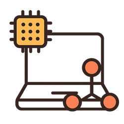

Sistemas Digitales
CCT: 30EBH0415E
Duración: 18 meses
Módulo I: Introducción a la electrónica básica
- Conocerás las bases de la electrónica y la estructura de las computadoras e impresoras, con la finalidad de aprender a repararlas.
Módulo II: Mantenimiento de pantallas
- Aprenderan la estructura y los componentes de una pantalla LCD, plasma o LED, los tipos de pantallas y los pasos para su reparación.
Módulo III: Mantenimiento de PC’s
- Estudiaran la estructura de laptops y tabletas, así como el mantenimiento preventivo y correctivo de las mismas.
Módulo IV: Consolas de videojuegos
- Aprenderan el mantenimiento y reparación.
Módulo V: Mantenimiento de celulares
- Adquirirás conocimientos para dar mantenimiento y reparación de celulares (CMDA, FSK, FDM, TDM).